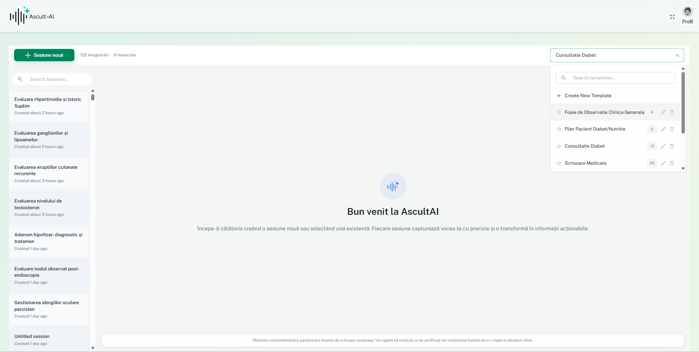
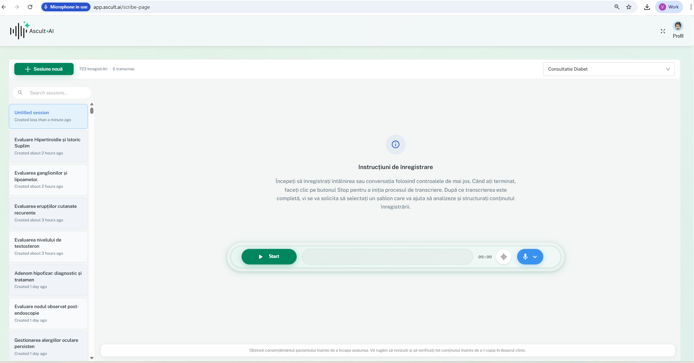
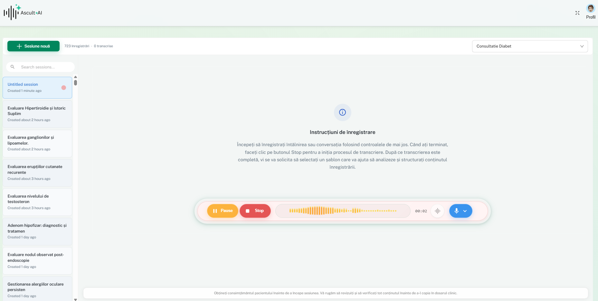
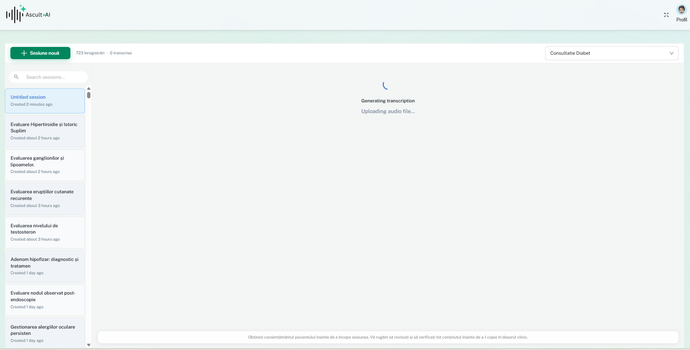
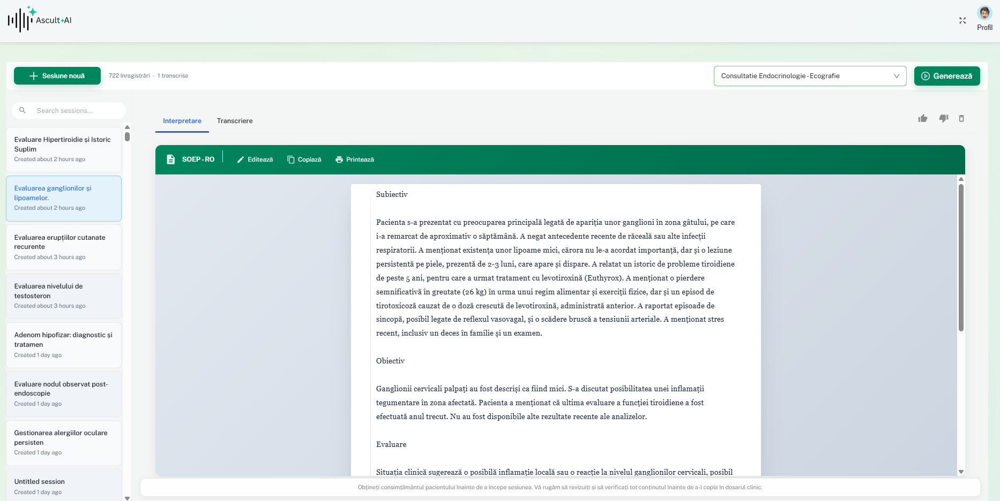
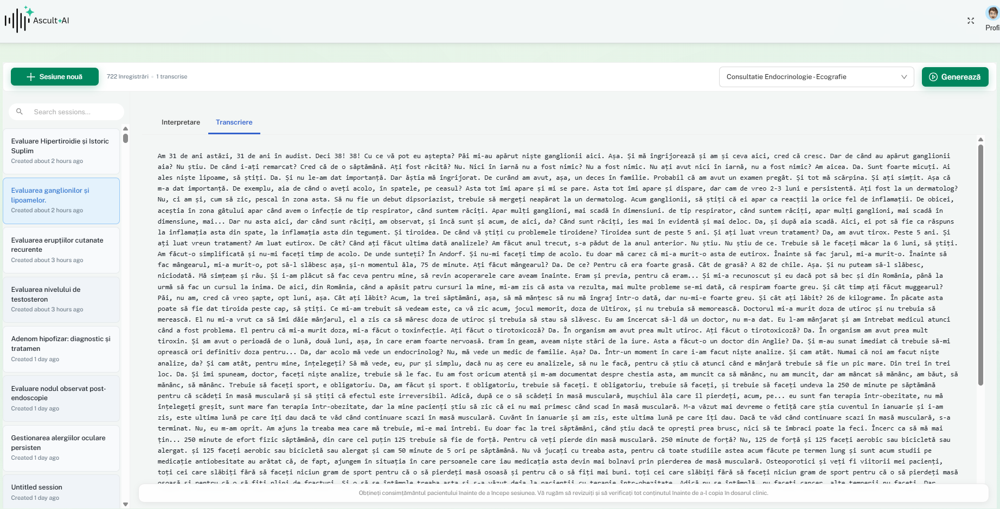
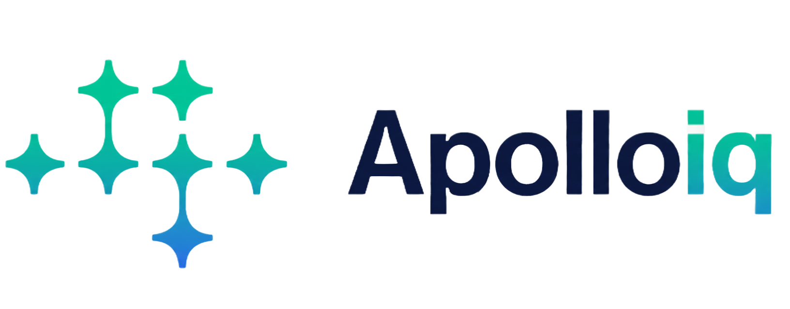

Pasul 1
Accesează aplicația prin contul dedicat
Conectează-te la platforma Merlin folosind contul tău dedicat. Odată autentificat, vei avea acces la toate funcționalitățile AscultAI.
Asistentul tău AI care transformă conversația cu pacientul în note medicale structurate, în timp real. Recâștigă până la 2 ore pe zi și elimină munca administrativă.
Știm că până la 70% din timpul unei consultații este pierdut cu introducerea datelor.
Principala cauză a epuizării este munca după program.


Conectează-te la platforma Merlin folosind contul tău dedicat. Odată autentificat, vei avea acces la toate funcționalitățile AscultAI.

Selectează din biblioteca de șabloane disponibile formatul care se potrivește cel mai bine nevoilor tale: SOAP, Scrisoare Medicală, Referat sau alte formate specializate.

Apasă butonul "Sesiune nouă" pentru a începe înregistrarea. Aplicația este gata să captureze conversația ta cu pacientul sau orice altă consultație medicală.

Aplicația înregistrează conversația în timp real. Când apesi butonul Stop, sistemul va genera automat transcrierea conversației sau consultației folosind tehnologii AI avansate.

Transcrierea este analizată și structurată automat conform șablonului ales. Rezultatul este un document medical complet, organizat și gata de utilizare.

Documentul structurat poate fi copiat direct în portalul tău de management pacienți sau exportat ca document pentru printare sau adăugare la istoricul pacientului. Totul este gata în câteva secunde!
Gândit pentru Limba Română: Recunoaștere vocală nativă care înțelege nuanțele, accentele și terminologia profesională în limba română.
Structurare Flexibilă: Organizează automat transcrierile în formate standard: scrisori, referate, rapoarte — conform preferințelor utilizatorului.
Vocabular Specializat: Recunoaște și transcrie corect termenii tehnici din domeniul profesionale cu vocabular specific (medical, juridic, tehnic).
Utilizatorul în Control: AscultAI este un instrument administrativ de documentare. Toate documentele generate sunt drafturi care necesită validarea utilizatorului.
Arhitectură Fără Retenție: Datele audio sunt procesate și imediat șterse. Nu păstrăm înregistrările sau conținutul conversațiilor.
Conformitate cu GDPR: Procesăm date conform Art. 9 GDPR, respectând cele mai stricte standarde europene de protecție a datelor.
Ascultă: Aplicația rulează în fundal (desktop sau mobil) și captează conversația dictată.
Transcrie: Transformă vocea în text cu ajutorul recunoașterii vocale avansate, optimizată pentru limba română și terminologie profesională.
Structurează: Organizează transcrierea într-un format ales de utilizator — un draft structurat, gata de revizuit și finalizat.
Suntem ApolloIQ, o echipă de clinicieni dedicați cu decenii de experiență și experți în tehnologie.
Am văzut frustrarea clinicienilor îngropați în birocrație și vrem să folosim tehnologia pentru a o elimina.
Misiune: Să democratizăm accesul la Inteligență Artificială pentru fiecare clinician din România.

Începe să economisești timp și să te concentrezi pe ceea ce contează cu adevărat: pacienții tăi.